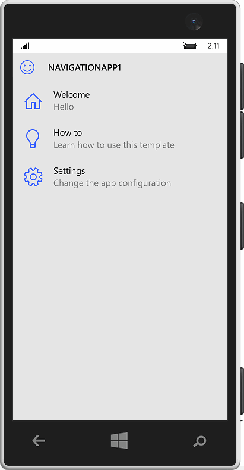
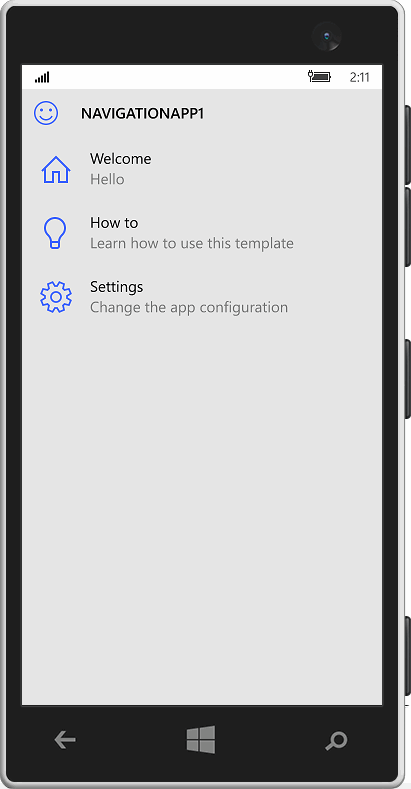

A project for a multi-level navigation Universal Windows Platform app with an adaptive layout. Build apps with a user interface similar to the Windows 10 settings app.
Desktop

Mobile

< Back
A project for a multi-level navigation Universal Windows Platform app with an adaptive layout. Build apps with a user interface similar to the Windows 10 settings app.

< Back